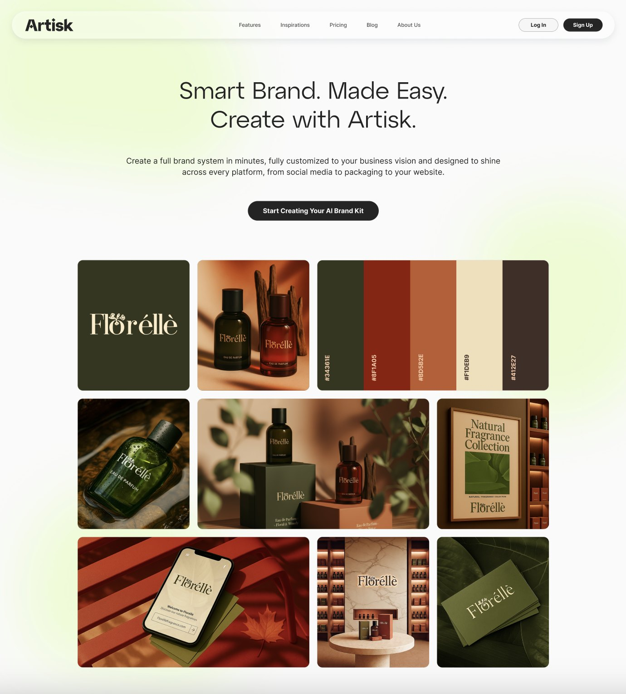
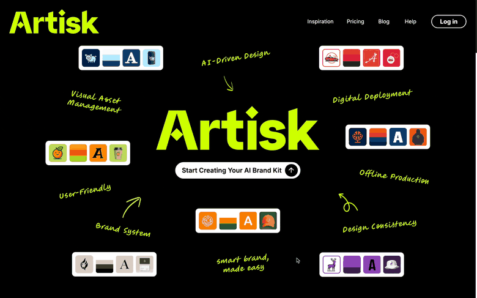
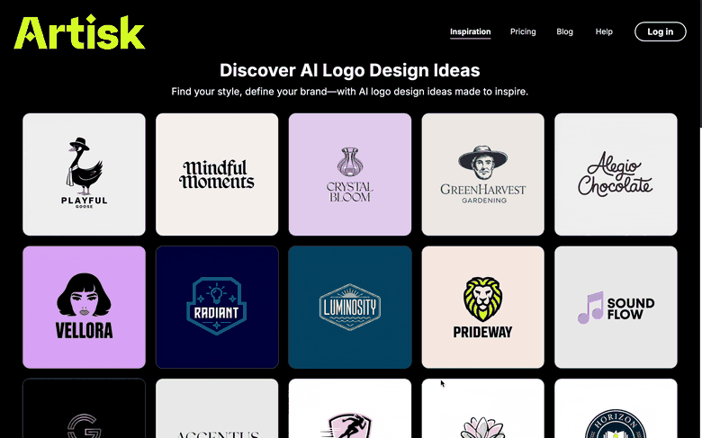
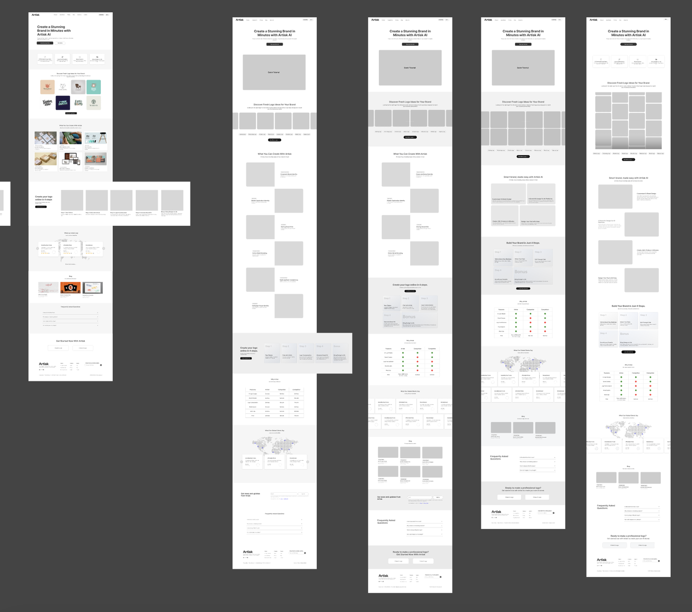
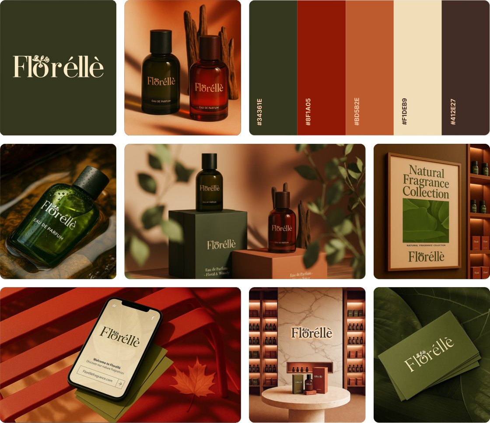
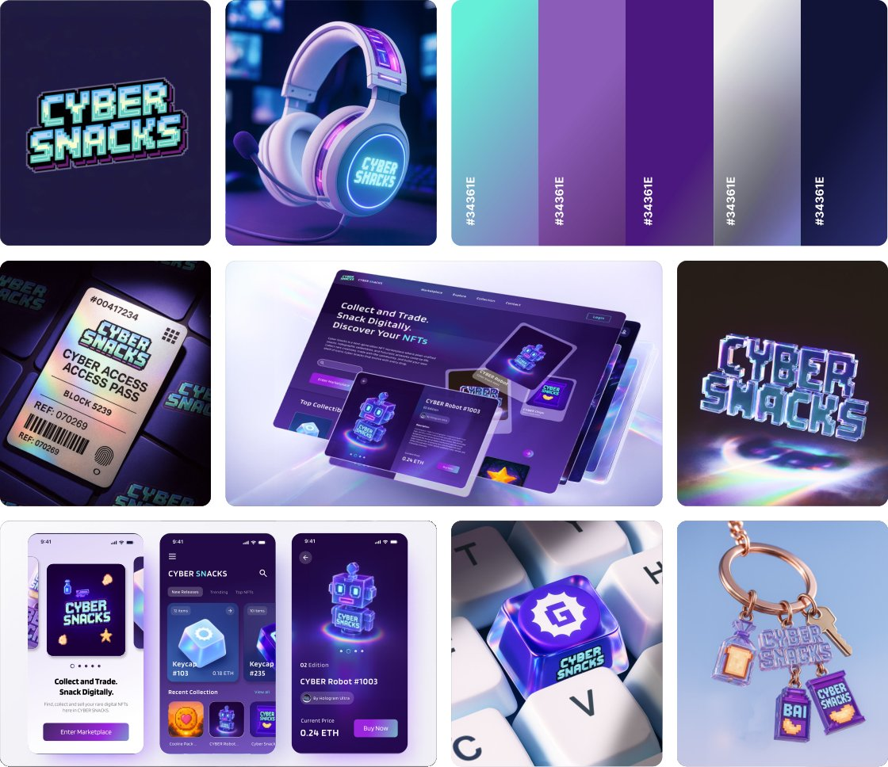
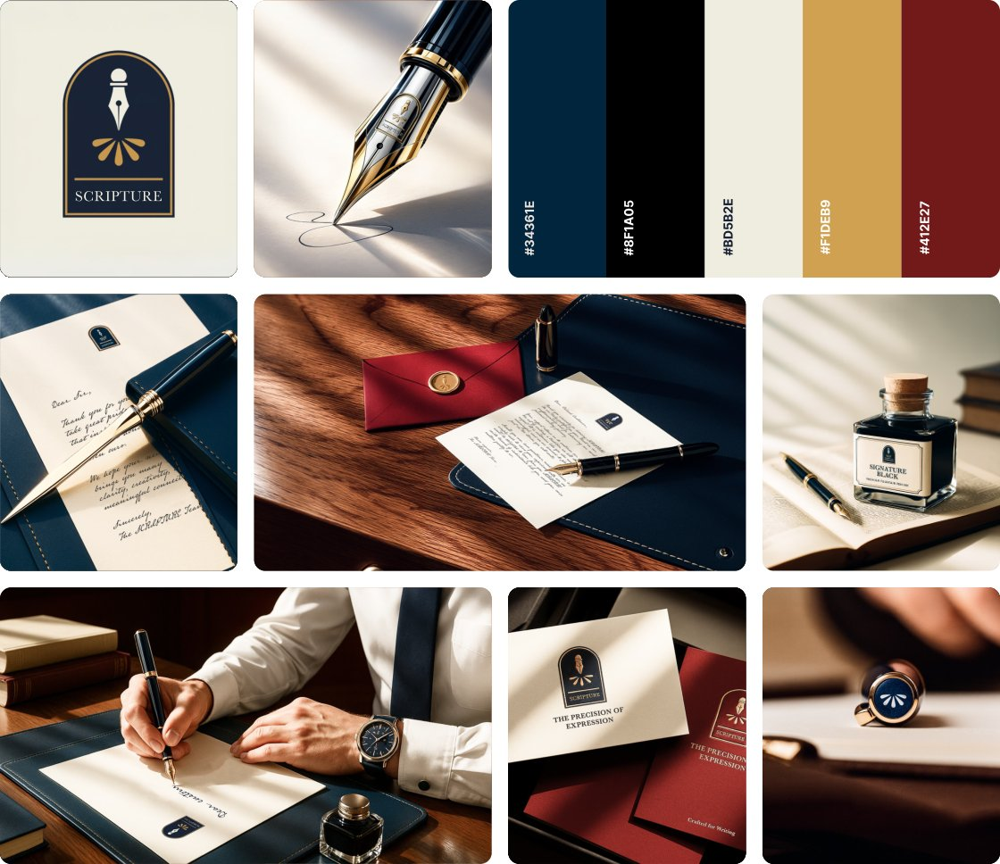
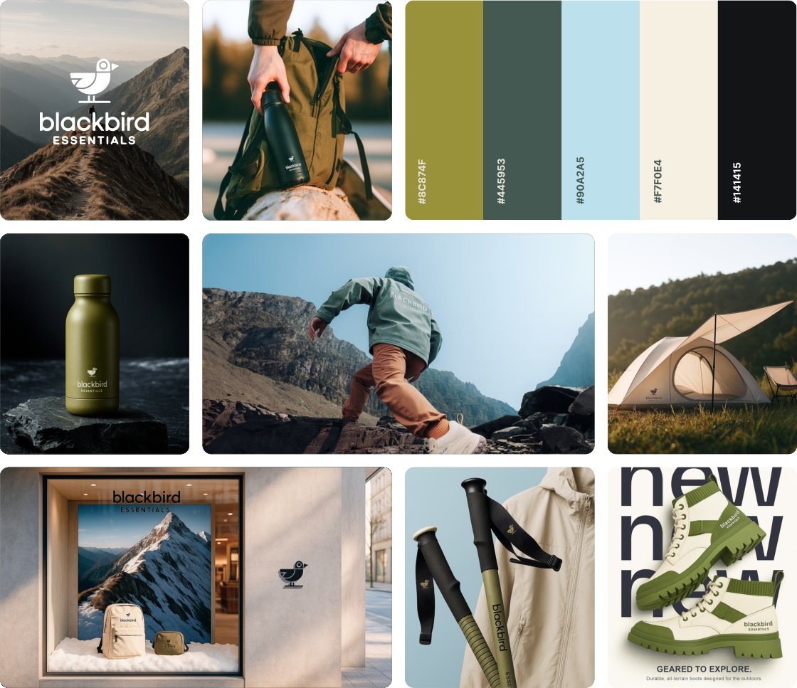
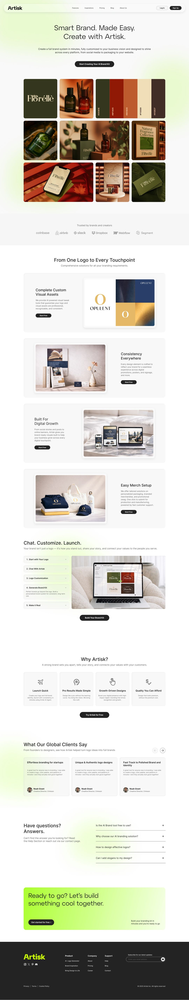

scroll

Year: 2025 – 2026 | Type: UX Design Internship | Role: UX Designer | Tools: Figma, Photoshop, Artisk Brand Kit, RoboNeo AI, ChatGPT
Artisk is a startup building an AI brand-kit generation tool — a product that instantly produces logos, product imagery, and complete visual identities for any brand. During my time there I worked on a redesign of the company's landing page and on creating and generating the marketing visuals the new site needed to promote the product.
Artisk's existing website was built around a dark, black-dominant palette with green as the accent color. The brief from the founder was clear: the current design felt too heavy and dull. They wanted a fresh direction that would make the site feel lighter, airier, and less visually demanding — one that would place less unnecessary burden on visitors and better match the positioning of a modern AI product.

Original landing page

Original inspiration page
The original website — dark and heavy, the starting point for the redesign.
Together with several other designers on the team, I ran a round of research, studying how other modern web products approach layout, hierarchy, and lightness. From this exploration we distilled three possible design directions.
We ultimately chose a card-based, modern style, punctuated with our brand's green accent. This direction resonated most with our core product — the AI brand-kit generator — because it mirrors the interface and visual language of the tool itself, keeping the site and the product feeling like one coherent system.
Inspiration exploration
Three design directions — the card-based modern style was selected.
The full redesign spanned many pages — landing page / homepage, About, Inspiration, Pricing, and Blog. I was primarily responsible for the homepage redesign.
I began with a series of wireframe iterations to lock down the overall layout, then worked with a senior designer to finalize the structure — before refining the page in depth and filling it with visual assets.

Landing page wireframe — finalized layout structure.
This was one of the most significant parts of my internship. To bring the page to life, I produced the imagery that introduces and promotes the product — using our own brand-kit generation tool to create logos, product images, and color palettes, supported by other AI image generators (RoboNeo AI, ChatGPT, and more) and finished with Photoshop retouching.
I first crafted distinct logos and imagery across a range of industries, demonstrating that our AI tool can generate cohesive brand directions for virtually any kind of business. These cross-industry brand-kit showcases anchor the top of the page:




Cross-industry brand kits generated with our AI tool · hover to pause
Beyond the industry showcases, I designed the imagery that walks visitors through how the product actually works — communicating both its availability and the full generation-and-interaction flow. This section moves from "From One Logo to Every Touchpoint" into the Chat → Customize → Launch journey, laying out the whole experience end to end: start with your logo → chat with Artisk AI → logo customization → generate the full brand kit → make it real.
To get these right, I communicated frequently with the designer responsible for the AI chat and the product's UI, making sure my showcase imagery perfectly summarized and represented the real features and capabilities of our AI brand-kit generation tool.
Product availability & the full generation-and-interaction flow — from one logo to every touchpoint
Here is the final homepage redesign — light, card-based, and unmistakably an AI product, with the brand's green woven through as an accent.

↕ scroll inside the frame to view the full page
This redesign was recognized by both the senior designer and the founder, and became a reference point for the direction of the site's visual language going forward.